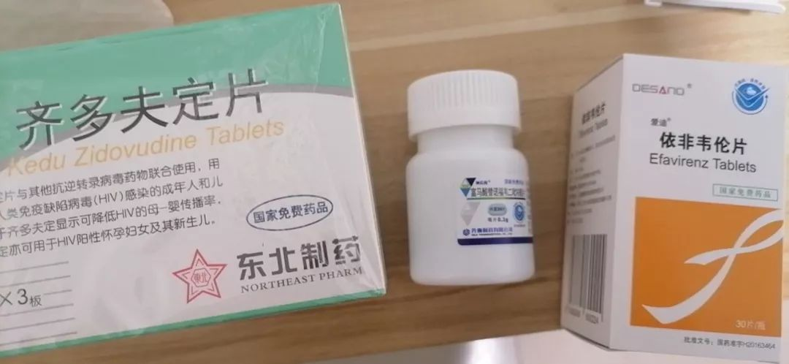

外卖骑手、出租车司机、快递员、志愿者……封城九日，他们维护着武汉的血脉
原文链接 备份链接 转眼之间，武汉封城，已有九日。绝大多数人都闭门在家时，一些还在为城市运送物资和生活用品的人，在尽其所能保障着城市的基本运转。如果把现在的武汉比喻成一具遭受病毒侵袭的人体，他们就像是人体里细小密集的毛细血管，努力延续着这 …
2020年1月23日10点，出于对新型冠状病毒疫情的控制，武汉正式封城。
在影响居民的日常生活之外，这一突然的决定，还威胁着HIV感染者的生命健康。
HIV感染者需要定点定时服用抗病毒药物保证治疗的有效性，而中国绝大部分HIV感染者服用的药物，都只能在户籍所在地或居住地定时定量地领取。
封城则意味着——很多HIV感染者的药可能不够了。
紧急情况下，武汉同志中心和志愿者们一起行动，让湖北地区的感染者们摆脱用药危机。
无所不JI的第二期节目，我们邀请了武汉同志中心的工作人员Barry，来为大家分享他们的行动。

* 扫描小程序码即可在“喜马拉雅”小程序收听，订阅即可收到无所不JI未来节目的推送。
这次新冠病毒爆发之前，我们并没有感觉。当时政府释放的消息是“可防可控”，也不知道会人传人。所以当时我们的同事都还在武汉上班，1月20日我们放寒假，那段时间关于疫情的媒体报道也多了起来。
但那时候，我们也还没有预料到情况已经严重到要封城了。直到有一天早上起来，我看到手机的消息说10点就要封城了，特别惊讶。当时首先想到很多人会遇到困难，但当时并没有立马想到说我们的感染者朋友可能会遇到一些问题。
为了出村拿药，他打110找了警察
因为封城，很多感染者突然药量不够了，有的是没有领足够的药，有的可能因为回老家身上没有带那么多药，但路封了之后却回不去了。封城当天，我们一下子接到了几十个这样的求助，当时就意识到这个问题已经很严重了，后来也有越来越多的感染者来咨询。
问题特别复杂，比如有的感染者朋友需要车，有的需要药物援助，包括我们后续是不是需要帮助武汉的定点医院（也就是这次重点接治新冠病毒患者的金银潭医院）邮寄药物等等。
我们建了一个爱心车队群，一个药物支援群，一个储备志愿者群，还发了一些招募，很多朋友和公益机构都跟我们联系。像爱心车队，都是武汉本地的朋友，他们帮忙接送感染者，或者接我们的志愿者到很远的地方给感染者送药。如果没有他们，很多感染者都不能及时地拿到这些药物。
最开始的时候，我们只有一两个同事在处理这些咨询，但咨询量增长的很快。为了更好地保护感染者的隐私，以及能够1对1更有效率地服务他们，后来我们机构7个同事6个都上阵了，再加上我们一个非常核心的志愿者，7个人专门为大家服务。
我接的第一个个案是我的朋友。他在广州生活，过年回了湖北老家，结果村里用石头或各种东西把路封上了。当时接到他的个案后，我很着急，立马去让他去联系广州当地的疾控。正好我们联系到了当地疾控拿药，又请当地公益组织的志愿者帮忙去寄过来。

帮感染者送药时，遇到被堵的道路。
但就算药寄过来了，人被困在村里也没法出来拿药。有时候被逼到打110找警察帮忙出村，经过镇上、去到县城，找疾控把手续办了才能拿到。
还有遇到别的问题，比如另一个个案，他之前领药的疾控和他现在被困的当地的疾控电话都打不通，因为有的地方疾控工作人员当时可能已经放假了，有一些地方疾控被要求去防治新冠病毒，人手不够，没办法去处理这方面的事情。
这种情况下，我们也会通过药物支援群想办法，比如说附近有没有感染者可以借药给他，或者看他能不能跑到其他疾控或者定点医院询问有没有药物等等。
感染者的绝望，让我也觉得很绝望
我们接触了很多感染者，有些感染者还是比较乐观的，自己的行动力也比较强。但也有一些感染者，他们对自己领不到药物的那种恐惧特别很强烈。有的会直接表达，说自己焦虑的不行，我的药还就剩那么两天三天了，我真的没有办法了，你们有没有办法可以去拿药之类的，他们会很着急地求救。
有个个案我印象特别深刻。那个当事人已经只有最后一晚的药了，但是他去咨询疾控，疾控那边只有初七才能给药，中间有三四天的空档。刚开始怎么都搞不定，他都有些灰心，说要不算了吧，反正我都吃了十年药了，断这三天没什么关系。
我们听到他这样讲也非常难过。我们真的是尽了很大的能力了，有时候也会有些无力。因为我们所有工作人员也都被困在当地，没办法离开去很实际地帮助他。

武汉同志中心帮感染者取到的部分抗病毒药物。
最后这个感染者自己也蛮给力的，他自己跑到疾控，去跟负责的工作人员说，你们再不给我就要报警了。也可能因为这个原因，那边加快了处理速度，让他在断药前成功拿到了药物。
封城后第二天就挺忙了，到第三天，我也开始帮忙接一些个案，包括自己帮忙整理文章，做一些沟通的工作等等。从早晨醒来就开始处理这些事情，一直到晚上睡觉，中途除了上厕所和吃饭，其他时间一直在关注这些讯息。
到晚上睡觉的时候，压力非常大。因为有一些感染者朋友他没有办法拿到药物，问题还没有解决，只能等到第二天跟疾控或者定点医院去联系才有可能解决，而且还不知道会发生什么。感染者的那种很绝望的感觉，让我也觉得很绝望。
有一天早晨起来，天气很阴沉，外面还飘着雨，人烟很稀少。有个感染者那时给我发消息，说疾控可能联系不到，他还有三天药，怎么办？我当时感觉特别失落。我很久没有因为接待个案或服务感染者这么失落了。
把路封了，慢性病、急性感染者怎么办？
1月26号，中国疾控出台了全国性的领药方案，保障异地滞留的HIV感染者领取药物。但在此之前我们就联系了省疾控，省疾控出台了政策，因为湖北的封城，感染者可以找当地疾控或定点医院异地取药。

1月26日，中国疾控发布关于保障异地滞留艾滋感染者免费抗病毒药物的通知。
比如我们有个个案，原来在广州深圳拿药，现在滞留武汉。我们就让他找广州疾控，请他们填写证明文件提交给武汉疾控或定点医院，然后感染者就可以在武汉取一段时间的药物。这个规定出来后，我们接着把详细的申请书模板、取药方式等写在了公众号里发了推送，也转到各个感染者的社群里面。
经过这几天的工作，我们接待个案的数量已经陆续减少了。很多求助的感染者的问题已经在解决中或者解决了，所以我也觉得放松了不少。
这次新型肺炎对我最大的影响，是自己一个人过了春节。虽然我本来就计划不回老家，但我在武汉的朋友也没办法串门或者聚会。我想象的假期就算是被封到家里，可能还可以看看剧休息一下。但实际上我们工作人员这几天都是在绷着一根高压的神经在帮大家。
直到昨天，我才抽空跟我妈妈聊了很久。之前就过年的时候问候了一下，此外都没时间联络。跟我对象也是，有时候我边处理工作边跟他视频，但我们可能就不会讲话，因为我没有时间跟他讲话。但好在爸爸妈妈和我对象都很理解和支持我。
我们同事之间也有分享自己的情绪，所以自己一些难过和失落的感觉慢慢就过去了。我们机构本身的工作，就是要为感染者们提供一些服务和支持。如果我们都不帮他们提供支持的话，他们真的就太困难了。
经历这次的事情，我确实能够更深刻地体会到，在我们的环境里，因为一些大的事情或是更多人的利益，我们有时候可能会忽视那些更弱势更少数的人的声音。
比如说把路封了，但是我们有没有想到很多慢性病的朋友、急性感染者的朋友，他们怎么办？感觉在紧急的状况下，这些就都被忽视了。还是希望在做任何的决定之前，要多考虑一些可能我们看不见的地方。
（插图均由武汉同志中心工作人员提供）
原文链接 备份链接 转眼之间，武汉封城，已有九日。绝大多数人都闭门在家时，一些还在为城市运送物资和生活用品的人，在尽其所能保障着城市的基本运转。如果把现在的武汉比喻成一具遭受病毒侵袭的人体，他们就像是人体里细小密集的毛细血管，努力延续着这 …
原文链接 备份链接 2020年1月31日。 农历正月初七。 武汉封城第九天。 天门封城第八天。 凌晨，世界卫生组织（WHO）召开新闻发布会，向全球通报：中国本次新冠肺炎疫情构成国际关注的突发公共卫生事件（PHEIC）。WHO官员还 …
原文链接 备份链接 今天是武汉每日书第八篇。有在汉口的市场销售人员，在武汉的自由职业者，在黄石的编剧……共同书写他们在这次疫情中所经历的生活片段，关于日常饮食、亲情反思和人间观察。 **01 ** 封城时刻， 如何点一份让人放心的外卖 …
原文链接 备份链接 《战疫口述记》，是燃财经在新型冠状病毒肺炎期间推出的特别栏目，记录疫情亲历者的观察和感受。本文为第3篇，查看前2篇请点击《农村这样防肺炎》《我在武汉战肺炎》。 作者 | 苏琦 金玙璠 孟亚娜 唐亚华 孔明明 魏佳 …
原文链接 备份链接 普通人的个人记述，即使其中夹杂着恐惧和不安，也能通过这种熟识感带给人心以安慰，我们可以通过它指引的熟悉的路径，在这场危机中找到自己身心的避难所。 全文4871字，阅读约需9.5分钟 当疫情降临时，每个人都被迫卷入其 …